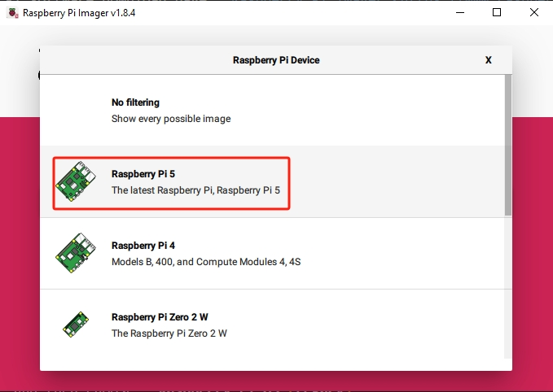
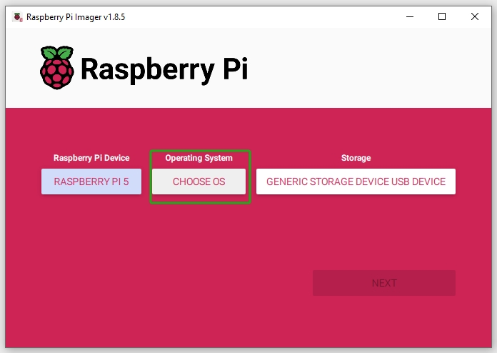
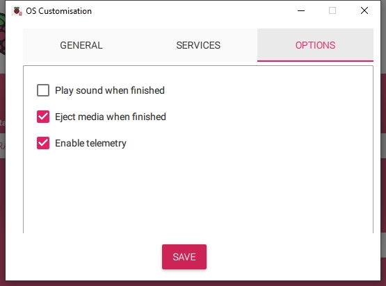

Note
您好，欢迎加入 SunFounder 的 Raspberry Pi、Arduino 和 ESP32 爱好者 Facebook 社区！与志同道合的朋友一起深入探索 Raspberry Pi、Arduino 和 ESP32 的无限可能。
为什么加入？
专家支持：在社区和官方团队的帮助下解决售后问题和技术难题。
学习与分享：交流技巧和教程，提升技能。
独家预览：抢先了解新产品发布和独家预览内容。
专属折扣：享受我们最新产品的专属优惠。
节日促销与抽奖：参与节日特别活动和抽奖。
👉 准备好一起探索与创造了吗？点击 [here] 立即加入！
在 NVMe SSD 上安装操作系统
如果您使用的是 NVMe SSD，并且拥有适配器可以将其连接到电脑进行系统安装，可参考以下教程快速完成安装。
所需组件
一台个人电脑
一块 NVMe SSD
一个 NVMe 转 USB 适配器
Micro SD 卡和读卡器
1. 更新引导程序（Bootloader）
首先，您需要更新 Raspberry Pi 5 的 Bootloader，使其支持从 NVMe 启动（优先于 USB 和 SD 卡）。
Note
此步骤建议使用一张空闲的 Micro SD 卡。首先将 Bootloader 写入这张卡，然后立即将其插入 Raspberry Pi，以启用从 NVMe 启动的能力。
或者，您也可以直接将 Bootloader 写入 NVMe 设备，然后插入 Raspberry Pi 修改启动方式。之后再将 NVMe SSD 连接电脑安装操作系统，安装完成后重新插入 Raspberry Pi。
使用读卡器将您的备用 Micro SD 卡或 NVMe SSD 插入电脑。
在 Raspberry Pi Imager 中，点击 Raspberry Pi Device，从下拉列表中选择 Raspberry Pi 5 机型。
在 操作系统（Operating System） 标签中向下滚动，选择 Misc utility images（杂项实用工具镜像）。
选择 Bootloader (Pi 5 family)。
选择 NVMe/USB Boot，以启用 Raspberry Pi 5 从 NVMe 启动（优先于 USB 和 SD 卡）。
在 存储设备（Storage） 选项中，选择用于写入的存储设备。
Note
请务必选择正确的存储设备。若同时连接了多个存储设备，为避免混淆，请断开不必要的设备。

现在点击 NEXT。如果该设备中已有数据，请确保提前备份。无需备份时可直接点击 Yes 继续。

很快，系统将提示您 NVMe/USB Boot 已成功写入目标设备。
接下来，将 Micro SD 卡或 NVMe SSD 插入 Raspberry Pi。通过 Type C 电源为其供电后，Bootloader 将从卡或 SSD 写入 Raspberry Pi 的 EEPROM。
{kind=link}
{kind=link}
{kind=link}
{kind=link}
{kind=link}
Note
之后，Raspberry Pi 将默认优先从 NVMe 启动，其次是 USB，最后才是 SD 卡。
完成后，请关闭电源并移除 Micro SD 卡或 NVMe SSD。
2. 将操作系统安装到 NVMe SSD
现在您可以将操作系统安装到 NVMe SSD 上了。
在 Raspberry Pi Imager 中，点击 Raspberry Pi Device，然后从下拉列表中选择 Raspberry Pi 5 机型。
选择 操作系统（Operating System），建议选择推荐的操作系统版本。
在 存储设备（Storage） 选项中，选择用于安装的 NVMe SSD。
点击 NEXT，然后点击 EDIT SETTINGS 来自定义您的操作系统设置。

设置 Raspberry Pi 的 主机名（hostname）。主机名是您 Raspberry Pi 的网络标识，您可以通过
<hostname>.local或<hostname>.lan访问它。
创建 Raspberry Pi 管理员账户的 用户名和密码。由于系统没有默认密码，设置唯一的用户名和密码对于系统安全非常重要。

配置无线局域网，输入您的 SSID（网络名称） 和 密码。
Note
请将
Wireless LAN country设置为您所在国家的两位 ISO/IEC alpha2 国家代码。
若您希望远程连接 Raspberry Pi，可在 服务（Services） 标签中启用 SSH。
若选择 密码验证，请使用“常规”标签页中设置的用户名和密码。
若使用 公钥验证，请选择 “仅允许公钥验证（Allow public-key authentication only）”。如果系统中已有 RSA 密钥将直接使用；如果没有，可以点击 “Run SSH-keygen” 来生成密钥对。

选项（Options） 菜单允许您配置写入过程中的行为，如写入完成时播放提示音、弹出设备、启用遥测等。

完成操作系统自定义设置后，点击 保存（Save） 保存设置，然后点击 是（Yes） 以在写入镜像时应用这些设置。

如果 NVMe SSD 中已有数据，请确保先备份以防止数据丢失。如果不需要备份，可点击 是（Yes） 继续。

当您看到 “写入成功（Write Successful）” 的弹窗时，说明系统镜像已完整写入并验证成功。现在，您已经可以使用 NVMe SSD 启动 Raspberry Pi 啦！
{kind=link}
{kind=link}
{kind=link}